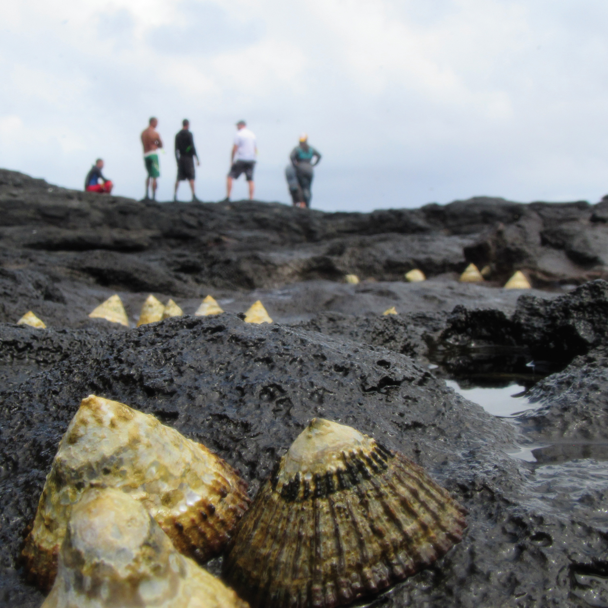
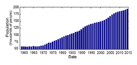
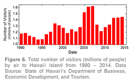
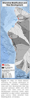
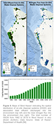
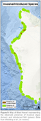
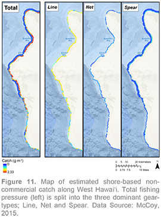

West Hawai'i - Social Indicators
Human relationships with ocean environments are diverse and include social, cultural, political, economic, and environmental dimensions (Kittinger et al., 2012; Cinner et al., 2013). Humans are, therefore, an integral part of ecosystems and they can act on ecosystem functions both as stressors and caretakers of the natural environment. Correspondingly, social data can include information on a range of human activities (e.g., distribution, practices, and interactions). Ultimately, ecosystem-based management requires ecologically meaningful information that is coupled with diverse human uses and practices at operationally relevant spatial and temporal scales.
Here, we present a suite of social indicators through space and time. Our goal was to integrate dynamic and spatially explicit information on human uses, values, and governance to identify important ecosystem pressures and drivers of the system in the region. Information on human dimensions and the social indicators developed can be used as direct inputs into ecosystem models as well as shape the direction of ecosystem-based management. This work is ongoing; the ultimate outcome will be to improve our ability to assess West Hawai'i's ecosystem and to provide information on current and predicted states of ecosystem integrity under different scenarios. Based on outcomes from the Conceptual Ecosystem Models and additional information from social-ecological work (e.g., Kittinger et al., 2012), we have established a list of social indicators of West Hawai'i's marine ecosystem.
Human-related pressures on ecosystem state such as coastal development, habitat degradation, and fishing pressure are based on human activities, and thus the ultimate driver behind many of these pressures is human population growth. The status and trends of individual pressures are then modified by technological advances, management practices and regulatory actions. Because historical and reliable time series information on many human-related pressures is often lacking, tracking population growth serves as an indicator (albeit broad) of human-activities that can either directly (e.g., fishing pressure) or indirectly (e.g., new development) influence marine ecosystem integrity. Population information was obtained for Hawai'i Island from 1959 to 2014 (Figure 5). Over the past 56 years, the population of Hawai'i Island has grown by 320%, from 60,658 people in 1959 to 194,190 people in 2014.
Compared to other sectors, tourism is distinguished both by its size and share of Hawai'i's economy and by the fact that there are few comparable opportunities for generating external sources of income. In fact, tourism expenditures represent the single largest source of economic activity in Hawai'i (State of Hawaii's Department of Business, 2006). Moreover, many visitors spend the majority of their vacations within Hawai'i's beach and nearshore environment. Beach and water sports, such as swimming, snorkeling, and scuba diving, are by far the most popular recreational activities among visitors (State of Hawaii's Department of Business, 2006).
The total number of visitors by air serves as an indicator of increased tourism associated with the use of the marine environment (Figure 6). Over the past 25 years, the number of visitors to Hawai'i Island has shown considerable variation, from a minimum of 1.08 million in 1994 to a maximum of 1.62 million in 2007. Likely owing to the global financial crises, the number of visitors fell sharply in 2008 and 2009 but has since shown a steady increase to 1.45 million in 2014.
Shoreline modification in coastal areas consists of the alteration or removal of geomorphic structure as a result of human actions. Similar to land development, modification often affects sedimentation and runoff that can impact coastal water quality. Shoreline armoring also increases or accelerates erosion of beaches seaward of the structure and alter flow patterns and redirect wave energy. To map shoreline modification in West Hawai'i, we integrated data on the current (2010) locations of man-made shorelines (e.g., sea walls, breakwaters, piers, fill), maintained channels and dredged areas, and offshore aquaculture (Figure 7; areas in red). Data from Wedding et al., (in review), and derived from the following: NOAA Environmental Sensitivity Index shoreline classification data, NOAA habitat maps, NOAA maintained channels, and digitized open ocean aquaculture locations.
New development on land can affect nearshore coastal environments by exposing soil and increasing sediment runoff from construction sites. After development is completed on previously natural land, the resulting impervious surfaces increase the rate of urban runoff pollution from streets and sidewalks into the nearby ocean. To map new development, we used changes in high resolution land use/land cover data from 2005 to 2010, and extracted pixels that changed from any undeveloped (non-impervious) land use class to impervious surface (Figure 7). We then calculated the total area of new development by watershed, providing geographic context for where changes in development have the greatest potential for influence on marine ecosystem state in West Hawai'i. Data from Wedding et al., (in review) and derived from the following: NOAA's Coastal Change Analysis Program (C-CAP) High Resolution Land Cover and Change datasets; U.S. Geological Survey National Hydrography Dataset Watershed Boundaries.
Much of Hawai'i disposes wastewater at the location in which it is generated via on-site waste disposal systems (OSDS) (i.e., cesspools and septic tanks). In fact, nearly half of all OSDS in the state are located on the island of Hawai'i and nearly 85% of those are cesspools (Whittier & El-Kadi, 2014), where the effluent receives no treatment prior to being released into the environment. With on-site disposal of wastewater come risks to both human and marine ecosystem health. OSDS can leech waste, nutrients (nitrogen and phosphorus), pharmaceuticals and pathogens into groundwater and steams that flow to the ocean. This runoff can result in algal overgrowth of corals, increase coral disease, and potential disease threats to humans (Anderson et al., 2002).
Between 1992 and 2010, the number of OSDS in West Hawai'i nearly doubled (Figure 8). The associated risk to human and marine ecosystem health is directly related to the rate of effluent discharge from OSDS. Using a 2014 study conducted for the State of Hawai'i's Department of Health (Whittier & El-Kadi, 2014), we provide estimates of total effluent discharge and nitrogen flux into the environment from OSDS (Figure 8). Although not all effluent and nitrogen discharged reaches the coast, there are a number of locations that have elevated risk owing to high concentration of OSDS proximate to shore, including Kawaihae to Puakō and Kailua-Kona to Kealakekua Bay (Figure 8; see Figure 2 for geographic locations).
Invasive, or alien algae, is non-native to the ecosystem and can pose a serious threat to coral reef ecosystems. Invasive algae can grow rapidly and spread quickly, smothering corals and outcompeting other organisms for space and resources, and thus significantly altering ecosystem structure and function (McManus & Polsenberg, 2004). Here, we have mapped presence of invasive algal species (i.e., Acanthophora spicifera, Gracilaria salicornia, Hypnea musciformis, Kappaphycus alvarezii), along West Hawai'i that were recorded during surveys from 2000 to 2013 (Figure 9). The occurrence of invasive algae is minimal across the region, although specific geographic areas show pockets of potential concern (e.g., Puako). Data from Wedding et al., (in review) and derived from the following: NOAA's Coral Reef Ecosystem Program (CREP), DAR, and the University of Hawai'i's Coral Reef Assessment and Monitoring Program (CRAMP) surveys.
When non-native fish get introduced to coral reefs, either intentionally or unintentionally, they can negatively impact ecosystem biodiversity and fisheries. Here, we mapped areas where introduced fish species have been identified in West Hawai'i (Figure 9). Specifically, we show the locations where Roi (Cephalopholis argus, Peacock grouper), Ta'ape (Lutjanus kasmiara, Bluestripe snapper) and To'au (Lutjanus fulvus, Blacktail snapper) were recorded during surveys from 2000 to 2013. Although introduced fish are fairly ubiquitous across West Hawai'i, recent research suggests that the native reef fish community appears to maintain biotic resistance to potential negative effects of introduced predatory fish (Giddins et al., in review). However, if the apparent balance between predator and prey populations were to be disturbed due to other threats, such as overfishing of native reef fish competitors or key functional groups such as herbivores, then the biotic resistance of the native fish community may be diminished. Data from Wedding et al., (in review) and derived from the following: CREP, DAR, and CRAMP.
Nearshore fisheries in Hawai'i comprise a diverse set of species in which multiple gear types are used to harvest reef fish and invertebrates, estuarine species, and schooling coastal pelagics (Friedlander et al., 2014a). Communities in Hawai'i often depend on these fisheries for the economic, social, and cultural services they provide, including supporting livelihoods, providing a direct source of food, and contributing to cultural practices, customs, and traditions (Kittinger et al., 2015). Non-commercial fishing plays an important social, cultural, and subsistence role for local communities in Hawai'i (Kittinger et al., 2015) and is estimated to be well over two times the reported commercial catch (Everson & Friedlander, 2004; Zeller et al., 2005; Zeller et al., 2008).
In an effort to capture nearshore fishing pressure along West Hawai'i, we have provided indicators that encompass both commercial and non-commercial fishing activities. Commercial catch data for the dominant gear types (i.e., Net, Line, Spear) were obtained from the State of Hawai'i's Division of Aquatic Resources (DAR) for commercial reporting blocks that encompass West Hawai'i (blocks 100–103). Non-commercial, shore-based catches were spatially mapped and was also divided into dominant gear types (i.e., Net, Line, Spear). Non-commercial fishing data are provided by McCoy (2015) and derived from the NOAA Fisheries Marine Recreational Information Program (MRIP; http://www.st.nmfs.noaa.gov/recreational-fisheries/index). Hawai'i's Marine Protected Areas (MPAs) were accounted for in the analysis performed using data from NOAA's MPA Center and DAR's fishing regulations to exclude no-take zones by geartype.
As an indicator of nearshore fishing pressure, we present annual commercial fisheries catch from 1980 to 2012 by dominant fishing gear type for West Hawai'i (Figure 10). Total commercial fisheries catch has varied considerably through time, from over 200 metric tons (mt; thousands of kilograms) in 1980, to just over 65 metric tons in 2012. The three most dominant gear types–Line, Net, and Spear–have also varied in their respective contribution to the annual catch through time. For example, Net fishing was the dominant fishing method in the 1980's and first half of the 1990's, comprising approximately 53% of the total commercial catch. However, from 1996 to 2012, Net fishing represents just 38% of the total catch, with Line fishing serving as the dominant method for nearshore commercial fisheries. In terms of species, the reported commercial catch consists primarily of coastal pelagics, namely 'ōpelu (mackerel scad, Decapterus spp.) and akule (big-eye scad, Selar crumenophthalmus) (Figure 10).
Non-commercial fishing constitutes a substantial proportion of the total catch from coral reefs in Hawai'i, and shore-based activities are the predominate mode of noncommercial fishing (Figure 11). Shore-based fishing pressure was calculated by gear-type from island-wide average annual catch of reef fish over the 2004-2013 time-frame from McCoy (2015). Non-reef fish (e.g., akule and ʻōpelu) were excluded from this analysis. Proximity to roads and shoreline steepness were used as a proxy for access, in order to spatially distribute island-level catch estimates along the coast. Although shorebased non-commercial fishing occurs throughout West Hawai'i, there is considerable spatial variability in accessibility of the coastline. Line fishing is the dominant gear-type with respect to total catch, followedby Net and Spear gear-types.
Non-commercial fishermen are not required to report their catch in Hawai'i. As such, information presented herein serves as the best available proxy for such activities. Recent work by Kittinger et al., (2015) employed participatory surveys to gather community-based information in Kiholo, West Hawai'i, providing additional insight into non-commercial catch in the region. In terms of species, herbivorous fishes were the dominant group extracted, accounting for 36% of the total non-commercial catch, with planktivores, secondary consumers, and apex predators accounting for 33%, 20%, and 11%, respectively (Kittinger et al., 2015). Given the only fisheries data reported in the region is commercial-based, which is unrepresentative of both total catch (Everson & Friedlander, 2004; Zeller et al., 2005) and species composition (Kittinger et al., 2015), we lack a comprehensive understanding of the dominant fisheries-related pressure to West Hawai'i's reef ecosystem.